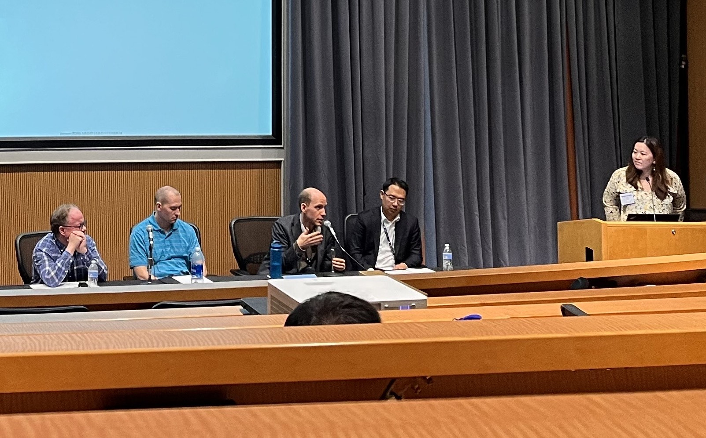

We were lucky that the openstatsware proposed session was accepted in this year’s ASA Biopharmaceutical Section Regulatory-Industry Statistics Workshop 2023, see the session details here. We would like to thank Ya Wang (Gilead, openstatsware) who organized the session, and Ning Leng (Genentech) who moderated the session and helped with the invitations. It was great to have Paul Schuette (FDA CDER) as FDA presenter and Ryan Jung (FDA CDER) as additional FDA panelist. The round was completed by Eric Nantz (Eli Lilly) as additional industry panelist.
Personally, I feel it was awesome to have a nicely filled auditorium of interested workshop participants to present to, despite the late timing of the session in the workshop (Friday afternoon).
Industry presentation
In the first presentation “First year of the Software Engineering working group - working together across organizations” and on behalf of openstatsware, Daniel Sabanes Bove (Roche, openstatsware) introduced the working group (WG) and presented its progress during the first year. The slides are available (in slightly modified html format for convenience) here.
FDA presentation
Paul Schuette gave the second presentation on “Open-source software for regulatory submissions and regulatory environments”, which is available on the R Submissions WG website here. Paul started by reminding us of FDA’s clarifying statement on software, which was already published in May 2015. After noting that he could only comment on the CDER side of FDA for submissions, he commented on the Study Data Technical Conformance Guide (SDTCG). The SDTCG in particular mandates that all source code for ADaM data sets, as well as TLGs for primary and secondary efficacy analyses need to be submitted. Paul noted that while ASCII files are required and non-ASCII characters are to be avoided, the files could still be with .r extension - not only .txt files are allowed. Interestingly even .jl i.e. Julia files are allowed for module 5 content (although they have not received any Julia submission), while .sas and .r are allowed for modules 3 to 5. In the future they would like to be able to support more formats.
History of R
Looking at the history of R, he noted that it followed S which was developed in the same building from Bell Labs as C and Unix, by John Chambers et al. R’s major innovation in the 1990s was the CRAN repository. RStudio as a popular IDE is available since 2011. With R Core and the R Foundation, a governance structure is in place. Discussing the various R community based WGs, Paul highlighted the R Submissions WG that already has completed 3 pilot submissions. Currently, pilot 4 with a container or web assembly based submission is under development. Paul also mentioned Python, which is used in a complementary set of applications such as natural language processing and machine learning, and less in statistics and visualization. He noted that also some commercial software is written in Python. Julia seems to be not (yet?) of great importance in the statistics community.
R for submissions
Open source software comes with benefits but also challenges. Paul noted the higher pace of changes in the software, and the missing support process when something goes wrong. The need for IT departments supporting the software installations can be another challenge. With almost 20,000 contributed R packages on CRAN, it is not trivial to decide which R packages to trust.
Zooming in on the use of R for submissions, Paul noted that CDER has not received yet a purely R based submission. So far, hybrid submissions combining R and proprietary software have been successfully received. Statistical reviewers also have been using R, in particular for plots that have in some instances already made it into labels. New graduates often come with R knowledge, however best practices are not taught in graduate schools. Paul recommended to reach out to the review divisions early before submissions, and to keep in mind the perspective of the statistical reviewers, who are using laptops for their review work.
Paul finished with the Stan Lee quote “With great power comes great responsibility”, reminding us that we need to use the power of open source software responsibly.
Panel discussion

Popularity of R
Ning started the panel discussion with asking how popular R is in the companies and FDA. Paul mentioned that they have been seeing an uptick in the recent graduates with R and Python background during the last 5 years. They also encourage staff to be bilingual in the programming languages to increase flexibility. Ryan added that he personally uses R a lot, e.g. to replicate sponsor analyses, and conduct FDA in-house analyses/visualization. Some reviewers use Python but it is only for research purposes not for regulatory purposes. The FDA’s Division of Analytics and Informatics (DAI) also has lots of talented R programmers. Eric added that in Eli Lilly they use R more and more, and Daniel added that in Roche Pharma new molecules from this year onwards start their study data analyses in R.
Quality Assessment
The next question was how the panel members assessed the quality of the packages. Daniel looks always at the source code of the package, which is nowadays typically available on GitHub - are tests included? If there are tests, are they meaningful and sufficiently granular? If yes, are functions documented? Are vignettes available? Eric added that documentation is very important for him to get started with a package, so is a key criterion. A great example here is the targets package from Will Landau. Paul mentioned that often he does not have a lot of time for the assessment, and provenance is an important factor: do you know where the package came from? Ryan added that not all packages meet the requirements of the reviewers, the issue already arose in one case where a package affiliated with LaTeX was utilized to provide improved fonts in R markdown. The package was rejected in the end because it could not be resolved. He added that well known packages are easier to accept, while not open sourced, proprietary packages would take a lot of time to review and test.
Package Dependencies
It was great to have a lot of the questions subsequently from the audience. The first was around package dependencies and how to deal with them. Eric mentioned that this was a key issue for the R Submission WG and its pilot submissions to the FDA, where renv has been used successfully. A key factor here was to be very verbose in the reviewers guide - you cannot be detailed enough because you want to make sure it can be reproduced on any machine. Also doing the work openly on GitHub helps to be transparent to the reviewers.
Commercial Models
Another question was whether commercial maintenance of open source packages could be an option, similar as RedHat for Linux. Paul commented that there were different models for monetizing open source software, he is aware of at least three different ones which come with their challenges. Generally, he encourages open source publication of packages and also harmonized cross-company efforts, to avoid surprises in submissions. The open source nature is an opportunity to avoid repeating the company specific macros submissions from sponsors for proprietary software seen in the past.
Containerization
One question was whether the use of containers could help solve the reproducibility challenge posed from different R and packages installations, and whether this could be integrated into the workflow of statistical reviewers at FDA potentially. Paul commented that there are several pain points. One was e.g. that containers work best with Linux operating systems, while reviewers work on Windows systems. Therefore, IT support was required which adds a level of complexity for the setup. Currently, other solutions are being discussed as part of Pilot 4 of the R Submissions WG. One of them is webR, where it was important that the security requirements are fulfilled because sessions would be sandboxed in the reviewer’s browser session, as Eric added.
Newcomers
A follow on question to the quality assessment discussion was how newcomers to the biostatistics community could make sure that their packages can be accepted, although they might be unknown in the first place to the community. Daniel started by emphasizing that for him assessing the quality of the packages is not primarily driven by the authors - newcomers could do a great job with using best practices (including methods description in vignettes, tests, documentation, user vignettes, GitHub issues tracking, CRAN publication etc). Paul added that dissemination is important, e.g. Journal of Statistical Software and others are important outlets. Eric added that the R Weekly site and R Weekly Highlights podcast, which regularly feature new and updated packages released in the R community, is another great way to publicize a new package and increase adoption.
HPC
The last question was whether extensive computing (e.g. cloud based sponsor submissions) could be handled during an FDA statistical review. Paul mentioned that unfortunately cloud based solutions are not currently compatible with security and other regulatory requirements. However, statistical reviewers have access to an FDA HPC environment, but the access process is not trivial, and can be time intensive.
